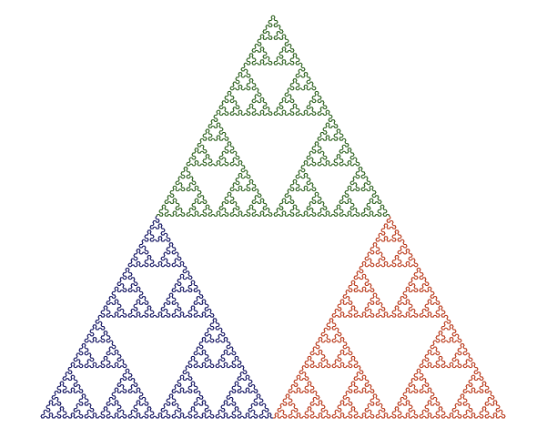
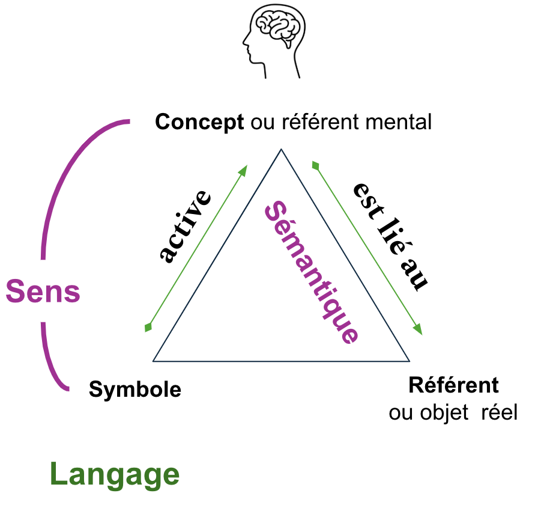
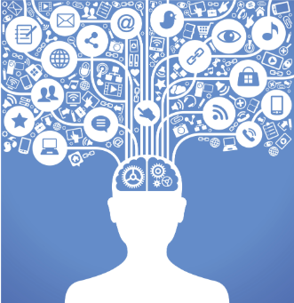

De la sémiotique à l'interopérabilité sémantiques des entreprises dans le monde numérique
Créé par Nicolas Figay et Pierre Moyen
Les divers thèmes abordés
- Le triangle sémiotique en contexte
- Catégorisation et classification
- Sémantique, Information et Connaissance
- Connotation, dénotation et perception contextuelle
- Intégrer philosophie de l'action, praxis et le pragmatisme
- Sémantique et Informatique
- Capture de la sémantique et Intéropérabilité Sémantique
- La communication dans les entreprises digitales
- A propos des ontologies
- Les ontologies dans le contexte du triange sémantique
- Illustration des langages formels standardisés avec ArchiMate et des protocoles métiers
- Le rôle de la normalisation
- Lien avec la babélisation
- Urbaniser et modéliser l'entreprise
- Freins à l'urbanisation
- Incommunicabilité entre les acteurs
Le triangle sémiotique en contexte
Motivation: définir plus en détail ce qu’est la sémantique afin de la lier aux problématique de l’interopérabilité et des standards informatiques
Le triangle sémiotique

Triangle sémiotique et sémantique
Etude du sens dans le language
Triangle sémiotique et sémantique
Les mots renvoient à des objets réels dans le monde

Triangle sémiotique et syntaxe
La syntactique (ou syntaxe) est l’étude des relations formelles entre les signes dans un système symbolique, sans se préoccuper de leur signification.

Le même terme (symbole) mais pas le même concept?

Triangle Sémiotique et pragmatique

Triangle Sémiotique et Rhétorique

Triangle Sémiotique, rhétorique et communication directe

Triangle Sémiotique, rhétorique et communication indirecte

Importance distinction communication directe et indirecte
pour
pragmatique
La pragmatique s'intéresse à la manière dont les énoncés sont
interprété
en fonction du contexte et des intentions sous-jacentes.
En communication directe, la compréhension est relativement simple puisque le message est explicite.
En revanche, la communication indirecte introduit une couche
supplémentaire de complexité:
le récepteur doit inférer l'intention à partir des éléments
contextuels, des relations entre les interlocuteurs, et des conventions sociales
Exemple en milieu professionnel
Dans un cadre professionnel, la communication directe peut être utilisée pour donner des instructions précises, tandis que la communication indirecte peut servir à éviter les conflits ou à naviguer dans des relations hiérarchiques complexes.
En communication directe, la compréhension est relativement simple puisque le message est explicite.
Par exemple, un supérieur pourrait dire « Je me demande si ce projet avance comme prévu » au
lieu de dire directement « Vous êtes en retard sur ce projet »,
laissant ainsi au subordonné l'interprétation de la demande d'action.
Impact de l’usage du numérique
L'usage du numérique renforce la communication indirecte en raison des limitations imposées par l'absence de signaux non verbaux et par la nature asynchrone des échanges.
En communication directe, la compréhension est relativement simple puisque le message est explicite.
Cela fait de la pragmatique une dimension essentielle de la communication numérique, car elle aide à décoder l’intention derrière les messages textuels et à gérer les échanges dans des environnements où les interactions indirectes sont la norme.
Le lien entre le triangle sémiotique et la sémantique est donc fondamental.
- Le triangle sémiotique illustre comment le langage représente la réalité à travers une structure symbolique.
- La sémantique est l’étude de cette structure, en analysant comment les mots (symboles) sont associés à des concepts (sens) et comment ils réfèrent à des objets réels ou imaginaires (référents) en fonction du contexte et de l’usage.
- Pragmatique et rhétorique fournissent des éléments de contextes souvent implicites qui contribuent à choisir le sens des symboles (désambiguïsation) dans un contexte autre que lexical/sémantique (place d’un mot dans une phrase ou d’un symbole dans un diagramme)
- Cela fait de la pragmatique une dimension essentielle de la communication numérique, car elle aide à décoder l’intention derrière les messages textuels et à gérer les échanges dans des environnements où les interactions indirectes sont la norme.
Nous allons maintenant explorer les notions de catégorisation et de classification.
Catégorisation et classification
Les termes "catégorisation" et "classification" sont souvent utilisés de manière interchangeable, mais ils ont des significations distinctes, notamment dans des contextes spécifiques tels que la linguistique, la philosophie et la science de l'information.

Catégorisation: Processus de regroupement d'entités en fonction de caractéristiques partagées ou de similitudes conceptuelles.
Classification: Organisation systématique d'éléments en groupes hiérarchiques prédéfinis basés sur des critères.
Lien catégorisation et triangle sémantique.
La catégorisation opère principalement entre concepts et
référents.
Elle nous aide à organiser le monde en catégories mentales compréhensibles
basées sur nos expériences avec des objets réels.
Par exemple, en rencontrant un chien,
nous le catégorisons mentalement en fonction des traits qu'il partage avec d'autres chiens.
Lien classification et triangle sémantique.

La classification est donc un processus plus rigide et structuré que la
catégorisation.
Elle formalise la façon dont les objets (référents) sont regroupés en
concepts et garantit que ces regroupements suivent des critères spécifiques, souvent basés sur
une base scientifique ou logique.
Cela est particulièrement important dans des domaines
comme la biologie, où le système de classification est bien défini et globalement compris.
Interaction avec le Monde Ouvert et les Contextes Interdisciplinaires

Lorsqu'on considère des scénarios de monde ouvert (comme la combinaison
de plusieurs disciplines ou systèmes de connaissances),
le triangle sémantique devient un
outil utile pour comprendre comment la classification et la catégorisation pourraient différer
ou s'aligner en fonction des domaines ou des disciplines.
Interaction avec le Monde Ouvert et les Contextes
Interdisciplinaires
Exemple

Un chien est il vu de la même manière par un biologiste et par un professionel de la santé le considérant comme animal de compagnie?
Conclusion: une perspective combinée
Le triangle sémantique aide à illustrer comment la classification et la catégorisation fonctionnent en reliant des symboles, des concepts et des référents.
- Classification: relation entre concepts et référents formalisée et structurée, symboles représentant des concepts standardisés et bien définis.
- Catégorisation: relation plus flexible et basée sur des caractéristiques partagées qui peuvent varier à travers les contextes.
Dans un monde ouvert où plusieurs classifications doivent être combinées, le processus implique de créer des correspondances et des alignements entre différents concepts et référents, garantissant la communication interdisciplinaire tout en maintenant l'intégrité de chaque système de classification. Cela pourrait impliquer des efforts de méta-classification ou d'interopérabilité sémantique.
Monde ouvert avec multiples classifications
Cartographie et alignement
- Cartographie ontologique: identifications des liens
- Alignement ontologique: formalisation des équivalences et subsomptions
- Intégration ontologique: plusieurs ontologies dans un cadre cohérent
S'agit il toujours de classification ou de catégorisation?
- Communication interdisciplinaire: compréhension entre domaines et disciplines
- Cartographe des classes ou catégories: formalisation des liens logiques/sémantiques entres domaines et disciplines
- Harmonisation: combinaisons harmonieuses
Ou bien s'agit il encore d'autre chose?
- Fédération ontologique: cadre pour harmoniser sans intégrer
- Interopérability sémantique: capacité à échanger et comprendre malgré différecences de structure ou de sémantique
- Meta classification: cadre de niveau supérieure
Un monde ouvert avec de multiples classifications

- Conception ontologique: créer les mises en correspondance
- Raisonneur ontologique: pouvoir utiliser des raisonneurs sémantique
- Cader de méta-ontologie: developer des cadres
En conclusion
- Dans un scénario de monde ouvert, la combinaison de multiples classifications pour la communication interdisciplinaire va au-delà de la simple classification ou catégorisation.
- Cela nécessite une approche qui intègre la cartographie ontologique, l'alignement et l'interopérabilité sémantique.
- Ce processus peut être considéré comme une forme de méta-classification ou de fédération ontologique, qui fournit une manière structurée de permettre une compréhension interdisciplinaire tout en maintenant l'intégrité des systèmes de classification individuels.
Sémantique, Information et Connaissance
Qu'est ce que la connaissance

- La capacité mentale permettant à l'esprit d'assimiler un contenu objectif, c'est-à-dire une réalité indépendante de l'observateur, préalablement traduit en signes et en idées.
- C'est également le résultat de cette assimilation
- Elle représente une possession symbolique des choses et s'étend sur une infinité de niveaux.
Qu'est ce que l'information

- Une partie de la connaissance
- Mais avoir une information sur un sujet ne signifie pas "connaître" ce sujet
- Plus on accumule d'informations sur un sujet, plus on le "connaît".
- La connaissance complète consiste à avoir le plus de facettes possible sur un sujet

Qu’est ce que la donnée dans la perspective des Systèmes d’Information

- Aujourd’hui, dans toutes les organisations, les idées circulent en permanence.
- Seules celles qui sont formalisées et qui ont une existence physique sont manipulables, exploitables et réutilisables.
- Cela concerne le stade initial de ce que l’on appelle l’information.
- La donnée représente l’existence physique même d’une information.
Qu’est ce que la donnée dans la perspective des Systèmes d’Information

- À ce stade, il ne s'agit pas encore de sens, mais simplement d’existence physique, de stockage et d’adressage.
- Cela concerne le stade initial de ce que l’on appelle l’information.
- La donnée devient information lorsqu'elle véhicule un sens, en particulier lorsqu’elle est interprétée dans un contexte métier.
Qu’est ce que la donnée dans la perspective philosophique de la connaissance
- Dans la conception philosophique de la connaissance, les données sont des éléments bruts, des faits ou observations sans interprétation, qui constituent la matière première pour l'acquisition du savoir.
- Historiquement, dans le contexte des entreprises, la donnée était davantage liée à des notions de fichiers, bases de données ou enregistrements, sans nécessairement s’intéresser à son sens ou à son interprétation.
A propos de la pyramide DIKW

- Données : Ce sont des faits bruts et non interprétés, comme des chiffres ou des observations, qui manquent de contexte
- Information : Elle résulte de l'organisation et du traitement des données, donnant un sens à ces dernières grâce à leur contextualisation.
- Connaissance : Elle se forme lorsque l'information est comprise et intégrée, permettant d'en tirer des conclusions et d'appliquer des compétences.
- Sagesse : C'est l'utilisation éclairée de la connaissance pour prendre des décisions judicieuses, souvent basée sur l'expérience et le discernement.
Practicité de la pyramide DIKW

- Dans la pyramide Data Information Knowledge Wisdom, les données sont des faits bruts qui, lorsqu organisés, deviennent information, puis connaissance, et enfin sagesse.
- Ici, l'aspect physique des données n'est pas considéré, car l'accent est mis sur leur transformation conceptuelle.
Cette approche crée souvent des difficultés de dialogue entre
- Les informaticiens, qui se concentrent sur le stockage et la gestion des données physiques
- Les gestionnaires de la connaissance, qui se préoccupent de leur interprétation et de leur utilisation.
Connotation dénotation et perception contextuelle

Connotation, Dénotation et sémiotique

- Dénotation: Le sens littéral ou premier d'un signe.
- Connotation: Les significations secondaires ou culturelles qui se superposent au sens littéral.
Prise en compte de la perception contextuelle
- Un même objet du monde réel soit vu de manière différente en fonction de qui l'observe
- Cela implique une compréhension plus large qui touche à la perception contextuelle, l'interprétation subjective, et les cadres de référence personnels.
Perception Contextuelle
- Cadre de référence personnel
- Contexte Personnel
- Contexte Immediat de l'observation
Perception Sémantique et Sémantique Sociale
- De l'individu au groupe
- Perception communautaire et sémantique sociale
- Conventions et normes
Perception Collective et Communautés de Connaissance
- Conventions, des normes, et des pratiques spécifiques
- Sémantique collective
- Vocabulaires métier spécialisés
Triangle Sémiotique et Communautés de Pratique

- Concepts partagés au sein d'un groupe
- Objets Réels perçu différemment
Communautés de Connaissance et de Pratiques
-
Les communautés de pratique et les communautés de connaissances jouent un rôle crucial dans
la définition des significations collectives.
- Les communautés de Pratique développent des conventions et des pratiques spécifiques qui influencent la manière dont les signes et les objets sont interprétés. Les membres partagent un vocabulaire spécialisé et des normes qui façonnent leur perception.
- Les communautés de Connaissance peuvent définir des normes de connaissance et des significations qui sont reconnues et acceptées au sein du groupe. Les conventions et les pratiques du groupe influencent la manière dont les informations et les objets sont perçus et utilisés.
Intégrer philosophie de l'action, praxis et pragmatisme
Intégrer philosophie de l'action, praxis et pragmatisme
- La praxis, le pragmatisme et la philosophie de l'action sont trois concepts qui, bien qu'ayant des similitudes, se distinguent par leur approche de l'action humaine, de la réflexion et de la réalité.
- Ils sont complémentaires et amène à considérer et à utiliser chacun à leur manière la sémantique (signification des mots), la sémiotique (étude des signes) et la pragmatique en lien avec les activités de l'entreprise, l’informatique et la connaissance
Praxis et sémantique
- La praxis est l'idée d'action consciente et réfléchie, où l'acteur ajuste ses actions à travers une réflexion continue sur leur impact et leur efficacité. Il ne s'agit pas seulement d'agir, mais de penser l'action dans un processus d'amélioration continue. C'est une action qui se réévalue constamment en fonction des résultats obtenus.
- une réflexion critique constante sur l'action en cours, avec une attention particulière aux implications sociales ou éthiques.
- la praxis dans l’entreprise ne vise pas seulement à livrer un produit ou un service, mais à transformer les processus internes pour atteindre des objectifs de qualité élevée, tout en améliorant en permanence les compétences des acteurs, les processus, et les résultats à long terme.
Pragmatisme
- Philosophie: vérité d'une idée ou d'une croyance dépend de son efficacité pratique et de ses conséquences dans le monde réel.
- Utilité des idées pour résoudre des problèmes et naviguer dans des situations concrètes.
- Centré sur les résultats immédiats, solutions pratiques dans l'instant, et non pas impacts à long terme ou questions de transformation profonde.
- Valorise praticité et l'efficacité directe.
- Pragmatisme: axé sur action efficace à court terme et satisfaction des objectifs immédiats-> approche différente pour sémantique et sémiotique dans l'entreprise.
Pragmatisme et sémantique
- Moindre importance de la précision sémantique et de la réflexion sur le sens profond des concepts.
- Fonctionnalité et atteinte des résultats mesurables.
- Action guidée par efficacité immédiate plutôt que recherche d’un sens plus profond
- -> manque possible profondeur sémantique -> possibles incohérences ou malentendus sur le long terme.
Pragmatisme et sémiotique
- Sémiotique (action guidée par des signaux immédiats)
- En pragmatisme, l’interprétation des signes se fait de manière plus superficielle et rapide.
Pragmatisme versus Praxis
- Contrairement à la praxis, où l’on cherche à aligner les actions sur une réflexion sémantique globale, le pragmatisme se focalise sur les résultats (chiffres, deadlines) sans s'attarder sur la profondeur des concepts ou des signes.
- Par exemple, l’important n’est pas de savoir ce que signifie précisément un KPIs ou comment il pourrait être interprété dans un contexte plus large, mais de s’assurer qu’il est atteint dans les délais impartis.
Pragmatisme versus Praxis
- Praxis -> liée à amélioration continue, transformation organisationnelle et méthodes qualité totale
- -> Elever standards avec réflexion critique et adaptation constante
- -> parfois au détriment de la simplicité et de l’efficacité.
- Pragmatisme -> livraison rapide et efficace de projets - un accent sur résultats immédiats avec respect délais et coûts, pas améliorations à long terme
La philosophie de l’action
- Quels Fondements philosophiques de l'agir humain.
- Compréhension des actions, motivations, responsabilités, influences.
- Motivations derrière les actions, la notion de liberté et la responsabilité morale des agents.
- Relie praxis et pragmatisme - riche compréhension des dynamiques des contextes organisationnels.
- Innovation et la responsabilité dans environnements complexes et interconnectés.
Conclusion
- Intégration philosophie de l'action et pragmatisme dans le triangle sémiotique étendu
-> dimension pratique et orientée résultats pour compréhension interactions symboles/concepts/référents - Représentations numériques et données
->influencent/facilitent actions concrètes + représentations utiles et pertinentes dans contextes pratiques.
Sémantique et informatique
Introduction sur l'informatique
L'informatique englobe tout ce qui concerne l'utilisation et le développement des technologies numériques pour traiter l'information
Impact de l’informatique sur la sémantique
- L'informatique redéfinit communication et aspects sémiotique, sémantique et pragmatique du langage humain en automatisant traitement/interprétation des signes/significations
- Les SIs manipulent symboles/concepts/relations -> formalisation du langage humain.
- Les SIs doivent interpréter signes (textes, images, codes) de manière cohérente avec leur contexte ->sémiotique essentielle
Impact de l’informatique sur la sémantique
- L'informatique oblige à une précision du sens
- Désambiguïsation complète langage et protocoles
- Représentation explicite et normalisée
- Formats intelligibles par l'homme
- Les ordinateurs sont plûtot idiots mais très rapide
Des langages machines aux langages des métiers
Concept vs. Terme vs. Code
Retour au triangle sémantique
Catégorisation et Classification dans le monde informatique
A propos systèmes des bases de données
Capture de la sémantique et
Interopérabilité Sémantique
La communication dans les entreprises digitales

A propos des ontologies

Les ontologies dans le contexte du triangle sémantique

Illustration des langages formels standardisés avec ArchiMate et des protocoles métiers

Le rôle de la normalisation
Lien avec la babélisation
Urbaniser et modéliser l'entreprise

Freins à l'urbanisation